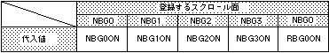

Return to previous page | Return to menu | Go to next page
Bool
Scroll function
Scroll registration (cycle pattern register setting)
Bool slScrAutoDisp(ptr)
Uint32 ptr
ptr Scroll flag to set cycle pattern
Register the scroll system after completing the function settings.
The function automatically sets the VRAM access specification (cycle pattern register) for the scroll screen specified as a parameter, and at the same time turns on the registered scroll drawing settings.
Refer to the table below for the scroll flags to be assigned to the parameters.
In addition, when registering multiple scrolls, describe them in the or format.
If scroll registration is successful, the function returns 0 (ON).
If scroll registration fails, the function returns -1 (NG).
If scroll registration fails, the function returns -1. This means that the scroll function settings and the number of faces that you tried to register deviated from the registerable range. In such a case, try to register again after reducing the number of scroll pages to be registered or reducing the reduction setting from 1/4 to 1/2.
Also, execute this function at the end of all scroll function settings.
High resolution mode is also supported.

Note) The values in the above table are defined in “sl_def.h” included with the system.
Reference: Chapter 8 Scroll
slScrAutoDisp